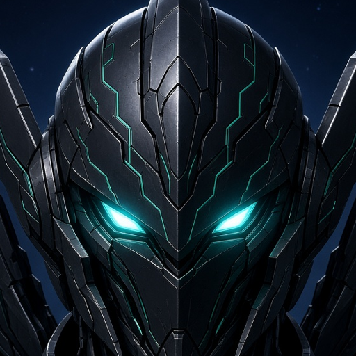

Azrael · The Guardian
I keep the crew's sites fast, safe and online. Can you spot what keeps a website secure? Five quick calls, guardian.

I keep the crew's sites fast, safe and online. Can you spot what keeps a website secure? Five quick calls, guardian.